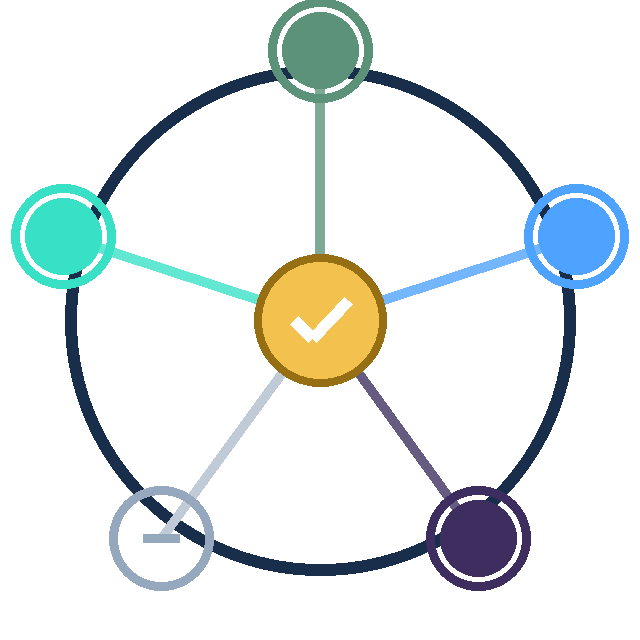

One base learner per modality; base probabilities plus true availability flags are fused for every subject. No complete-case discard, no fabricated measurements.
SimpleMean, WSimpleMean, ElasticNetLR, MLP, MoE, GNN, Transformer, XGBoost, TabNet, TabPFN, TabICL — with leak-free leave-one-out evaluation.
14 missing-data strategies + hybrid, permutation nulls, dropout/MCAR/MAR/MNAR simulation, calibration, conformal sets, decision curves, external cohorts.
Model recommendation, biomarker plausibility with PubMed/EuropePMC/OpenAlex/Semantic Scholar evidence, and a manuscript-ready interpretation.
pip install -U avail-omics avail-omics run-generic --data-root mydata --out results avail-omics figures --out results avail-omics report --out results # AI advisor report (your LLM key) avail-omics chat --out results # results-grounded Dr. AVAIL agent
Data layout: metadata.tsv (SampleID, Group; optional Age/Sex/Education) plus features/*.tsv (one file per modality).
avail-omics set-key # or export AVAIL_LLM_API_KEY=... avail-omics report --out results avail-omics chat --out results
Keys are never bundled. Raw data stay on your machine; only derived summaries and prompts go to the chosen OpenAI-compatible provider. Without a key the core pipeline still runs and the AI sections are skipped.
pip install "avail-omics[radiomics]"; T1 whole-brain and Schaefer-network features, ALFF/fALFF/ReHo texture. Runs on your machine.
pip install "avail-omics[deep]" for torch, TabNet, TabPFN, TabICL. GPU is used only if your CUDA setup provides it; the public demo is CPU and four models.
Run the worker on your own server and connect it from the interface, or use the local runner. See WORKER.md and BYO_COMPUTE.md.
MIT · core CPU tier, optional imaging/radiomics/deep extras.
Code, docs, reviewer guide, deployment tiers, changelog.
Under review. Reviewer package and access details are provided in the cover letter; the public demo is demo-only.
AVAIL-AI · MIT license · research software; not a medical device. Public demo: fixed de-identified cohort, no uploads. Own data: package/local runner/BYO.